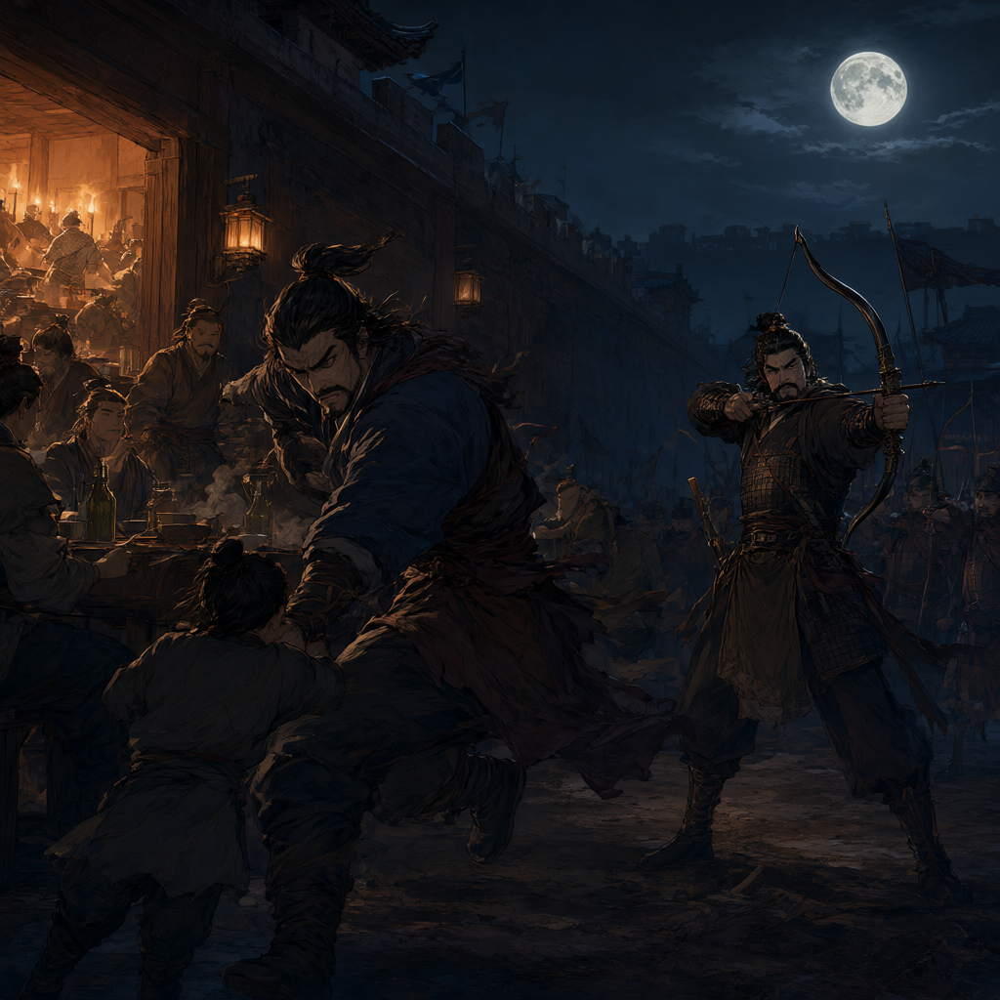
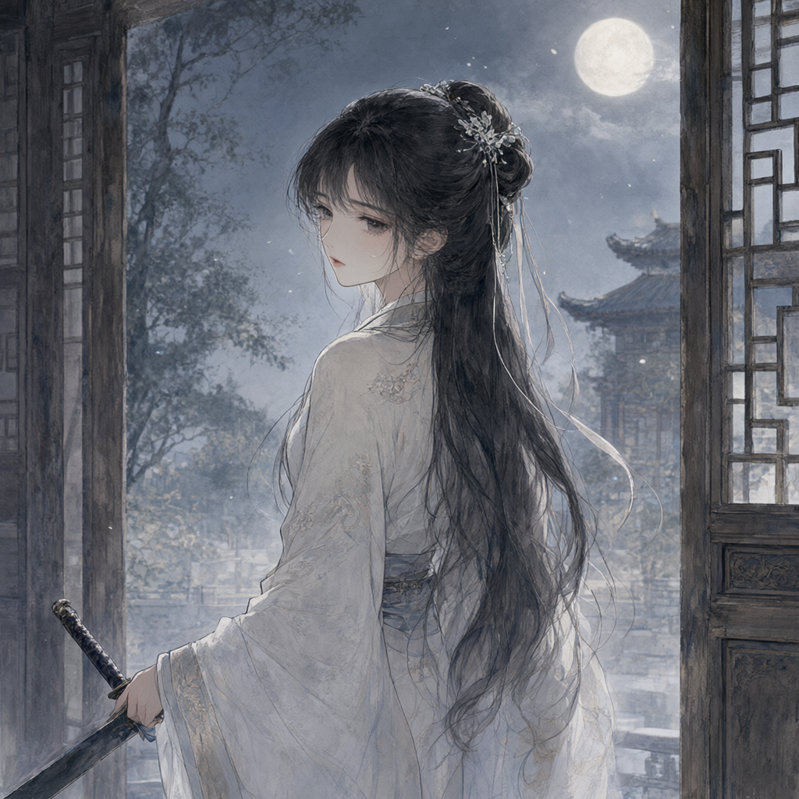
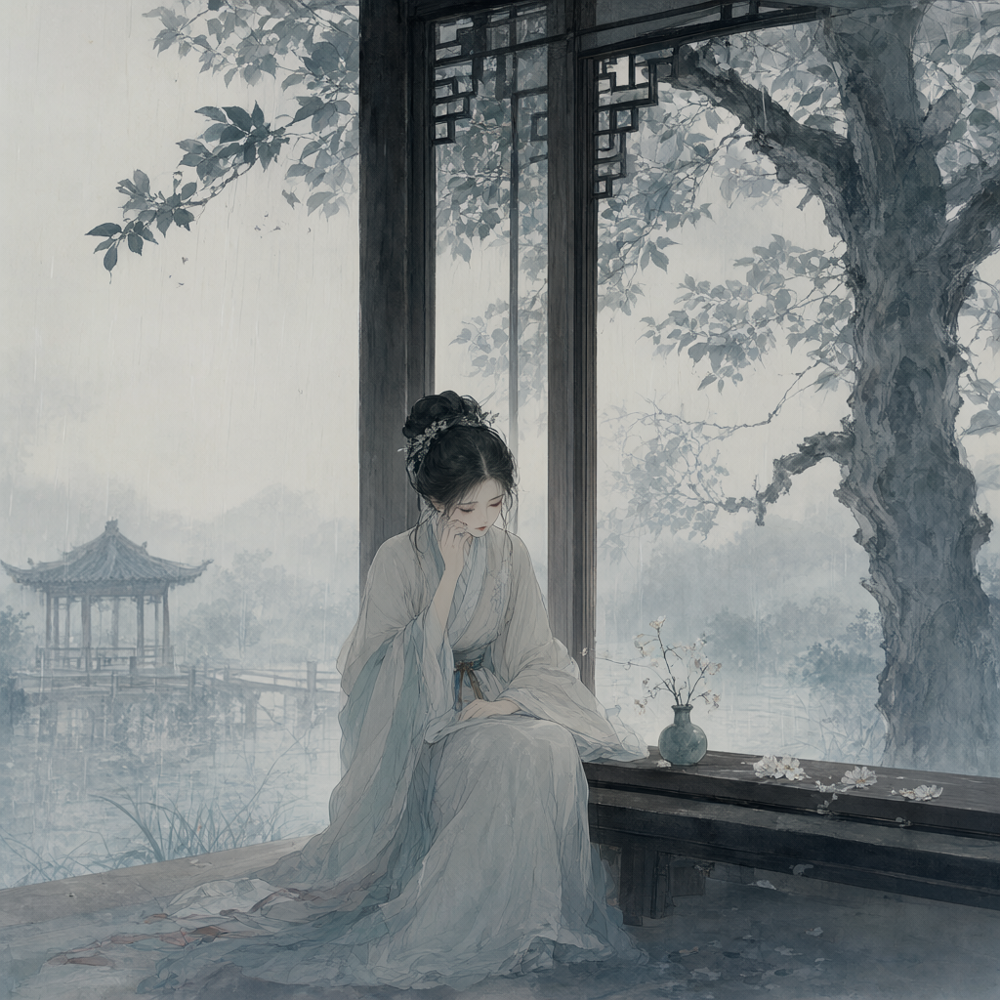
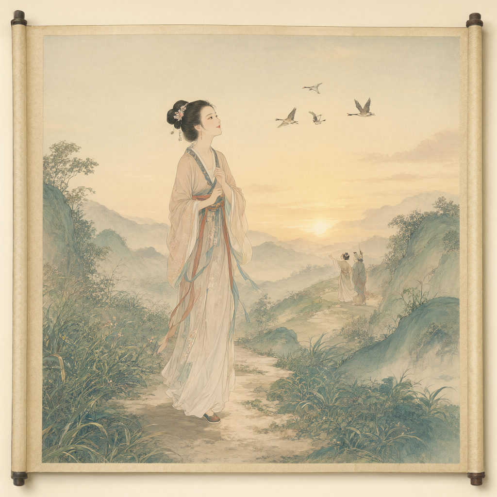
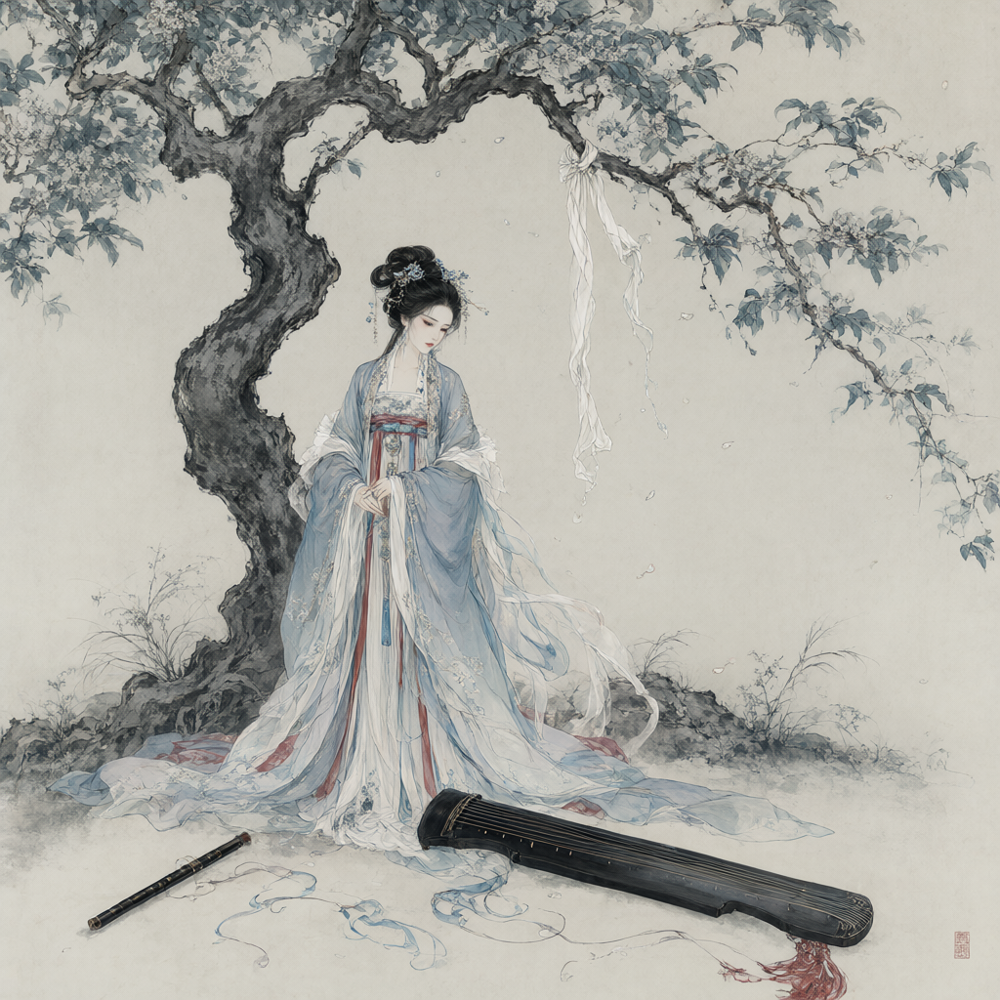
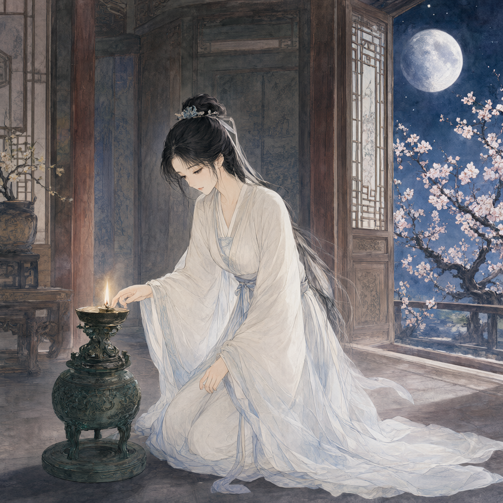

苇舟江湖梦
诗图
总目录
知识库
量化报告
仓库
9 首题画诗/口占/福纸愿 × 本地 AI 生图 ｜ 金色章标=归属明确，灰色=待考
← 返回主页
尚樱
十八、
夏叶打油诗·赠嫂子
声若弦簧唇赤丹，目似平波颜带欢， 溟池未竟心澄澈，一肌一态极尽妍。
注：夏叶初见尚樱所作的容貌赞
任琅 · 尚樱
十一、
情花节·福纸愿
尚樱：如果可以，希望任琅能永遠和尚樱一起 任琅：祝尚樱平平安安、好運連連
注：二人各自写在祈福红纸上的心愿

任琅（疑）
四十二、
题画诗 · 待考
张灯成宴度佳节，高墙月明照影孑， 以身护子不求报，乡土家父实豪杰。
注：画中“护子”者，疑似任琅父辈，待考

刘媛灵
一、
临别口占
此去一别经世年，心中遗憾再难填。 他日相逢各为主，未相识来不相看。
注：被迫回屋、对离别少年的怅惘

夏叶
三十五、
词（题草纸）
窗外小楼隔夜雨，暗问庭树默不语。 愁思满芳膺，点点至天明。 身闲心久病，无需镜妆定， 望残花伶仃，雨蒙远山亭。
注：夏叶所作，尚樱于王芣房中读出
陈奉天 / 梨阳王一脉
二十八、
神像飘字条·五言
梨阳川阴替，长生迷心计， 纷乱三十载，妖刀终伤己。
注：咏梨阳王→川阴王一脉与妖刀

尚樱身世（疑）
二十八、
题画诗 · 待考
朝观婴孩木边戏，夕思己小不与同， 天道有常善相报，幸得相成连理松。
注：画中绝美女子与尚樱一模一样

青楼/琴笛女子（待考，疑苏雨）
二十五、
题画·七言律 · 待考
柔情皎身离青楼，事态相违只得愁， 应执花烛伴暑木，却得尸骨喂野鸥， 文闺怎奈刀剑寒，抚琴终难存笑颜， 三尺白绫东拗树，燕舞画笛难再演。
注：范豪所展画卷上的盛装美女判词

女斋主/守青灯者（待考）
四十九、
题画·七言律 · 待考
曾时林间猎弓惊，幸而遇得帝同情， 虽从恶人心犹善，山石与命不同行， 朗月撒辉星辰稀，殿外桃花正得形， 久念昔日救身恩，独守青灯使长明。
注：古观素袍女子独守青灯、念救身恩